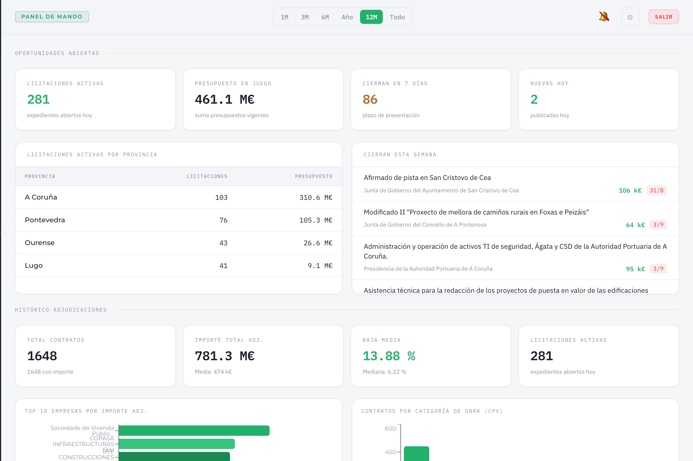
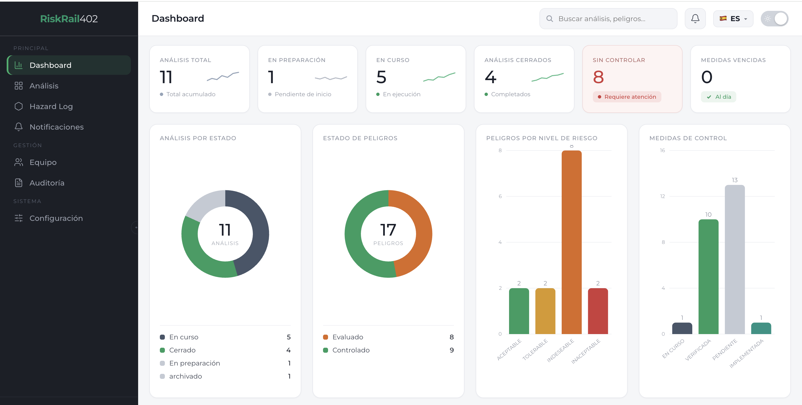
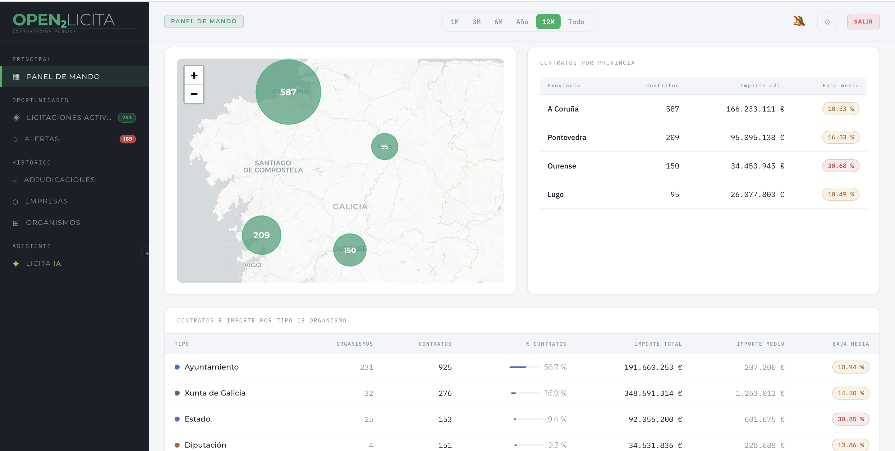
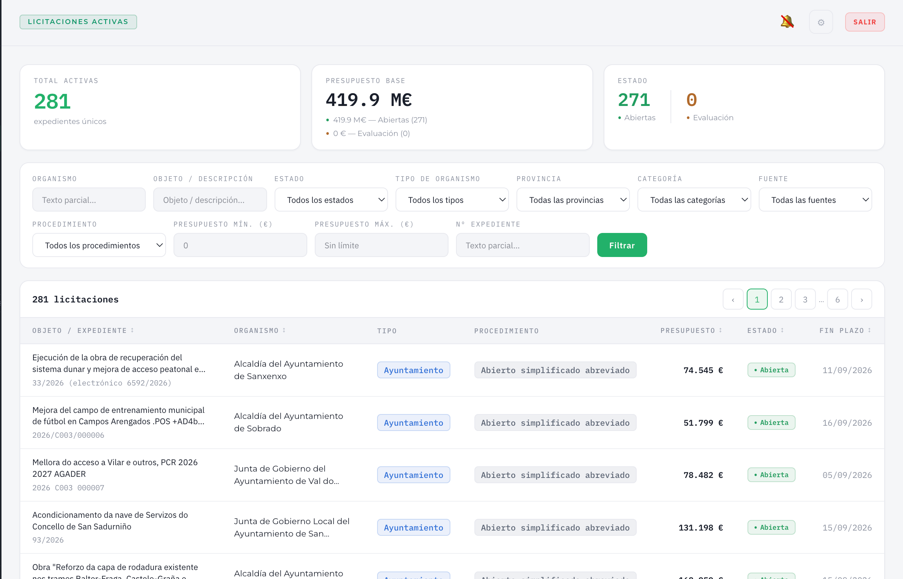

Construcción · licitación pública
Open2Licita
Agrega, analiza y alerta sobre licitaciones de construcción a partir de datos abiertos de contratación pública.
Ver más →
Plataformas SaaS verticales que combinan datos abiertos, inteligencia artificial y cumplimiento normativo para los sectores de construcción y ferroviario.
Dos plataformas verticales, cada una construida sobre la normativa y los datos de su sector.

Agrega, analiza y alerta sobre licitaciones de construcción a partir de datos abiertos de contratación pública.

Digitaliza el análisis de riesgo ante cambios ferroviarios conforme al Reglamento (UE) 402/2013, con trazabilidad completa.
No construimos software genérico. Cada plataforma nace del proceso real de su sector: los boletines de contratación, las fases del análisis de riesgo, el vocabulario de quien lo usa.
Nuestros modelos hacen el trabajo pesado: extraen y estructuran información de expedientes, detectan patrones y redactan borradores técnicos listos para revisión experta.
Trazabilidad, firma electrónica y auditoría integradas de serie. Diseñado para superar la revisión de una entidad evaluadora o de un órgano de contratación.
Te enseñamos la plataforma con datos de tu sector y valoramos juntos el encaje.
Encontrar y analizar licitaciones de construcción es lento, manual y disperso en múltiples boletines.
Una plataforma que agrega, analiza y alerta automáticamente. Todo el mercado de obra pública en un solo panel.

Agregamos automáticamente datos públicos de contratación de múltiples fuentes de open data, con actualización continua. Sin huecos, sin depender de revisiones manuales de boletines.
Nuestros modelos de IA procesan cada expediente para extraer y estructurar la información clave (importes, plazos, adjudicatarios, criterios de valoración) y detectan patrones en el histórico de adjudicaciones.
El sistema identifica oportunidades relevantes para cada usuario y genera alertas e informes periódicos sin intervención manual.

El análisis de riesgo ante cambios ferroviarios según el Reglamento (UE) 402/2013 se gestiona hoy con Excel y Word, sin trazabilidad.
Una plataforma digital guiada que blinda todo el proceso, de la evaluación preliminar a la declaración de conformidad.
Flujo digital que guía paso a paso el análisis de riesgo conforme al Reglamento de Ejecución (UE) 402/2013, desde la evaluación preliminar hasta la declaración final de conformidad.
A partir de un título y descripción del cambio, el asistente genera automáticamente el borrador técnico completo, listo para revisión del equipo experto.
Cada expediente queda blindado: quién hizo qué, cuándo y con qué justificación, con firma electrónica integrada. Informe de auditoría generado automáticamente.
Relativo al método común de seguridad para la evaluación y valoración del riesgo. La plataforma sigue su estructura de fases y sus requisitos de documentación, y produce el expediente que la entidad evaluadora independiente espera recibir.